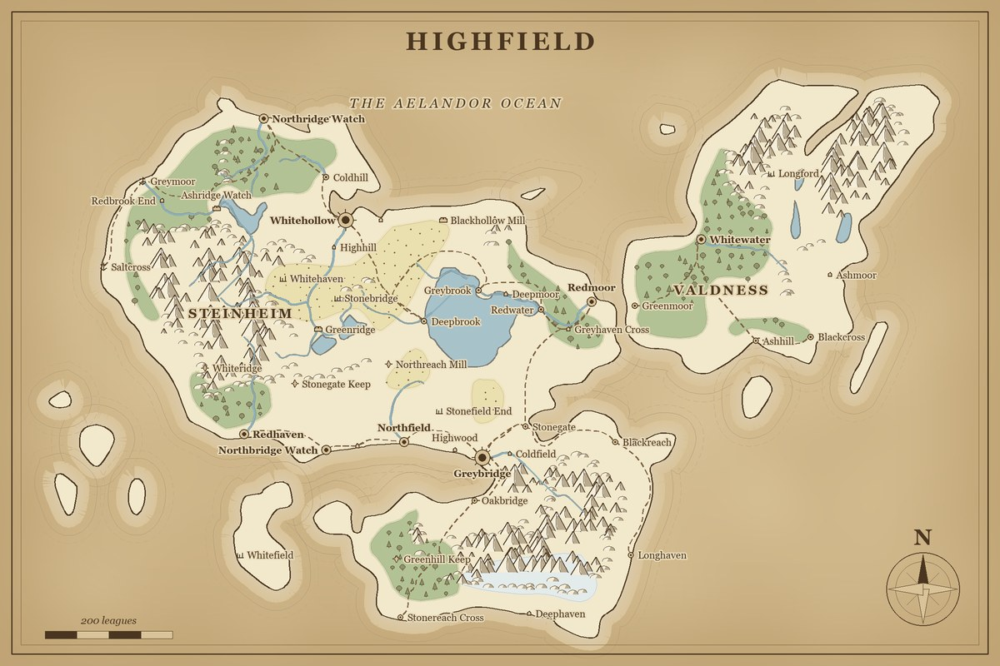
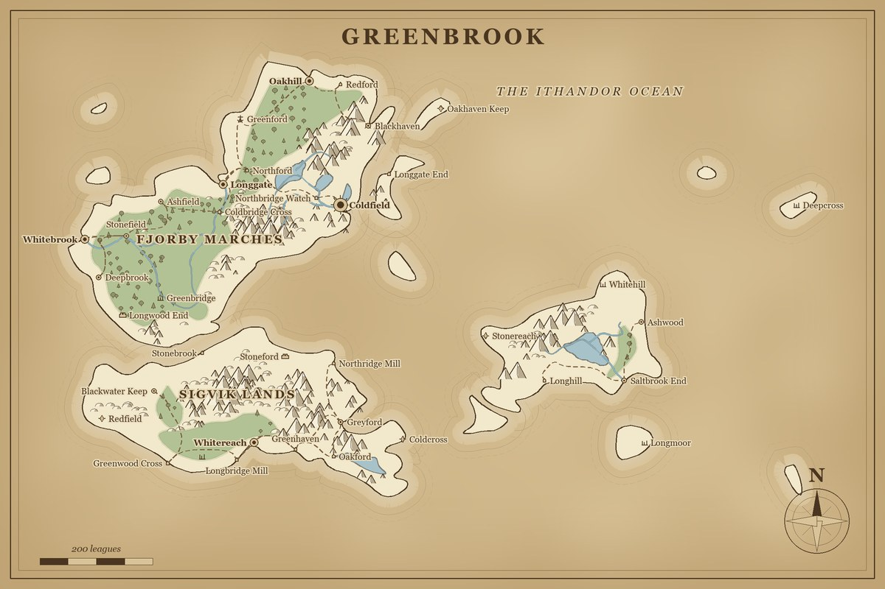
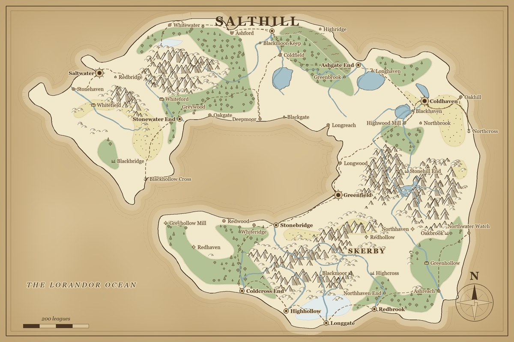

A free fantasy map maker for authors, built into your writing studio
Press one button and a whole world appears: ragged coastlines, mountain ranges, rivers that run from the highlands to the sea, forests and deserts, roads that follow the land, and dozens of named towns. Edit every part by hand, link places to your character and location sheets, and export a picture for your readers.



Every map above was made by NovelForge with a single click and nothing edited by hand. The place names are generated too, and can be replaced with your own.
How a world is built
A map that only looks random makes a poor setting. The generator builds the land the way land forms, so the pieces make sense together, and that is what lets a writer trust it when a character walks from one city to another.
- The land. Each continent is a cluster of overlapping lobes, bent by a warp field and roughened with fractal noise, so coasts wander and form bays, headlands and islands instead of ovals. A percentile picks the sea level, so “30% land” really gives 30% land on every seed.
- Relief. Ridged noise lays mountains along crests, so they form chains and massifs rather than lumps.
- Coastlines. Smooth outlines exact to a fraction of a cell (marching squares), with the holes in a landmass becoming inland seas and lakes.
- Rivers. Every basin is flooded so that water always has a way to the sea. Rivers are traced upstream from their mouths along the biggest catchment, so each starts in the hills and ends at the water, with tributaries.
- Biomes. Forest, desert, marsh and ice come from temperature, altitude and moisture, blended so they form soft patches rather than pixel blobs.
- Settlements. Every site is scored for harbours, fresh water and gentle ground, and the best are taken with a minimum spacing so cities are not all in one corner.
- Roads. Routed by pathfinding across the land: never through the sea, avoiding steep ground, crossing rivers at a cost, and merging into roads that already exist the way trunk roads do.
- Names. Regions are labelled where the land is deepest and the ocean where the water is widest. Names come from editable, per-culture lists.
The same seed and settings always rebuild the identical world, names included, so a world you love can be shared or regenerated exactly. The seed is stored on the map.
Then make it yours
Nothing is locked. Generated maps are made of the same shapes the drawing tools make, so every tool works on both.

Draw by hand
Freehand coastlines, click-to-place shapes, an eraser and a pan tool. Thirteen terrain types: land, sea and lake, forest, mountain range, hills, desert, marsh, ice, region border, river, road, wall and route.
Twenty kinds of pin
Capitals, cities, towns, villages, castles, temples, ports, ruins, caves, dungeons, mines, camps, bridges, inns, battle sites, dangers, treasure, portals and more, each with its own icon and an automatic label placer that hides a name rather than print it on top of another.
Linked to your story
Pins link straight to your Location sheets: double-click a pin to open its sheet in Word. Layers show and hide independently, so you can keep a secret map of the villain's plans.
Four art styles
Aged parchment, ink on white, dark atlas and treasure map. Same map, different mood; switch at any time.
Names in your own voice
Settlements, realms, regions, seas and rivers can each sound different. Edit the name lists in a plain JSON file, and the next world uses them.
What you see is what you export
One drawing list feeds the editor, the PNG and the SVG, so an export is never a different picture from the one you were looking at.
Export it
- PNG for your website, your newsletter or a print-ready picture.
- SVG, a true vector drawing you can scale to a poster or open in a vector editor.
- Word, a document with the map and a legend of every pin, so it sits with the rest of your project.
The maps you make are yours to use in your own books, on your site and anywhere else. NovelForge is MIT-licensed software and places no restrictions on the images it produces.
Honest limits. Only world-style maps are generated for you. City, building, dungeon and battle maps start from a blank grid that you draw by hand. There is no brush for stamping single trees or castles: terrain is drawn as areas and ridge lines, and the mountain, tree and hill stamps are placed for you.
Build your world in one click.
The map maker is part of NovelForge, which is free for Windows 10 and 11.